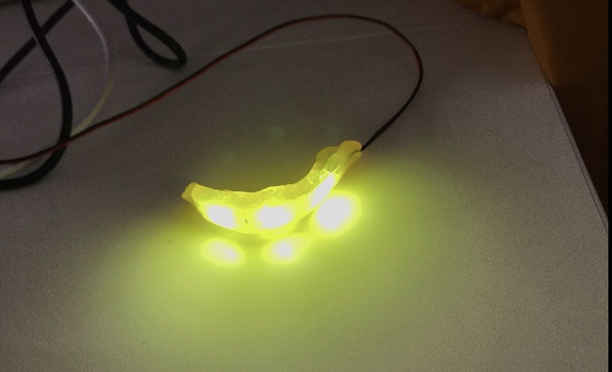
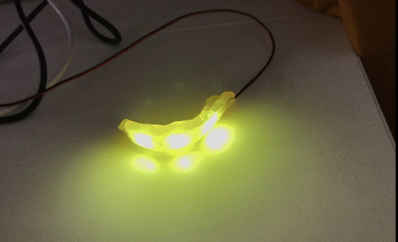
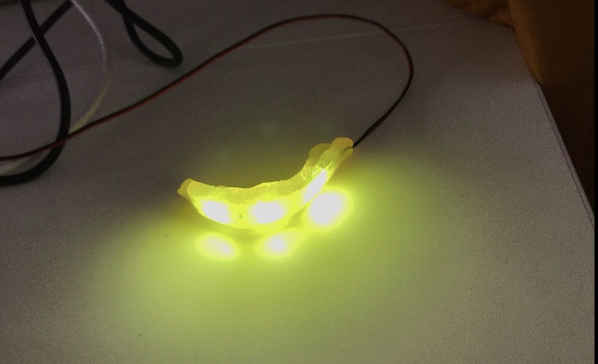

☆ゆるゆるさーきっと☆
入学したてぶりに、久しぶりにハンダをしました。 基盤などを使うときはハンダは必要不可欠です。

これは、LEDテープライトをおゆまるというお湯で形を変形できて冷えたら固まる素材を使い、
マウスピースを作りました。
口に入れるときは、一応ラップを巻いてから入れました。
テープライトは薄いし軽くて、しかもLEDで発光もしっかりしていて
いろんな用途に使えるものづくりに適している素材だと思いました。
 
